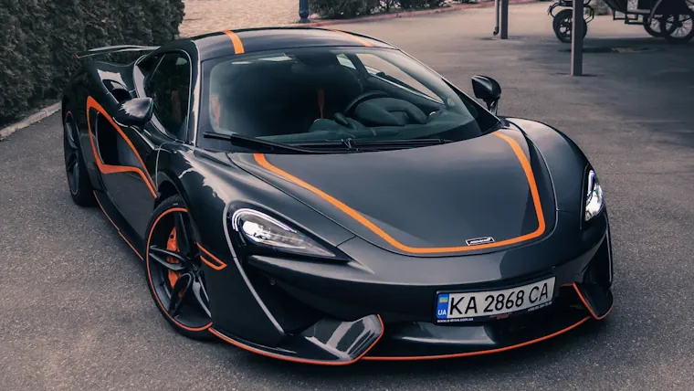

МИ ГОТОВІ ДОПОМОГТИ
Часті
запитання.
Тут ти знайдеш відповіді на найпопулярніші запитання про автомобілі McLaren, їхні можливості та технології.

Маєш запитання?
Ми зібрали відповіді на найважливіші питання.
1. Що таке LuxC?
LuxC — це сайт, присвячений автомобілям McLaren, їхньому дизайну, швидкості та сучасним технологіям.
2. Які автомобілі представлені на сайті?
На сайті можна ознайомитися зі спортивними автомобілями McLaren та їхніми особливостями.
3. Чим McLaren відрізняється від інших брендів?
Бренд відомий своїми потужними двигунами, аеродинамічним дизайном та інноваційними технологіями.
4. Чи швидкі автомобілі McLaren?
Так! Автомобілі McLaren створені для високої швидкості, динамічного прискорення та спортивного водіння.
5. Чи комфортні автомобілі McLaren?
Так, автомобілі поєднують спортивний характер із сучасним інтер'єром та зручними технологіями.
6. Які технології використовує McLaren?
Компанія застосовує сучасні системи керування, легкі матеріали, аеродинамічні рішення та потужні двигуни.
7. Де можна дізнатися більше про автомобілі?
Переглянь сторінку «Можливості» нашого сайту, де представлена додаткова інформація про особливості автомобілів.
ТВОЯ ПРИСТРАСТЬ — ШВИДКІСТЬ
Відчуй силу
McLaren.
Відкрий світ швидкості, стилю та інновацій разом із LuxC.
Дізнатися більше ➜